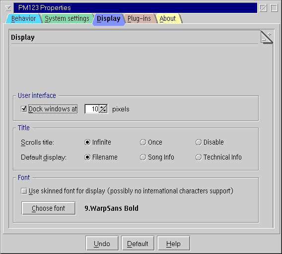
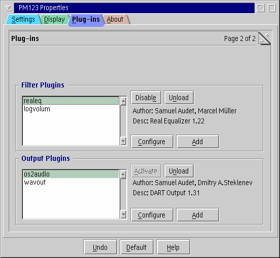

PM123's Plug-ins Configuration

This dialog is divided into two parts - one for the visual plug-ins
and the second for decoder plug-ins.
- Enable/Disable
- Enables/disables the selected plug-in.
- Unload
- Unloads the plug-in completely.
- Configure
- Avalaible only if the plug-in is configurable.
Click this button to set plugin's settings.
- Add
- Add a plugin (some visual plugins are skin specific, see PM123 sound visualization).

This dialog is also divided into two parts - in filter plugins part,
you can add a filter, in output plugins part you can use a output plugins.
- Enable/Disable
- Enables/disables the selected plugin.
- Unload
- Unloads the plugin completely.
- Configure
- Avalaible only if the plugin is configurable. Click this button to set plugin's settings.
- Add
- Add a plugin.
- Activate
- Activate an output plugin. There must be always one active output plug-in. With wavout
plugin, you can save the music to a WAV file. Wavout plugin is very useful for gabbing CD
audio tracks.